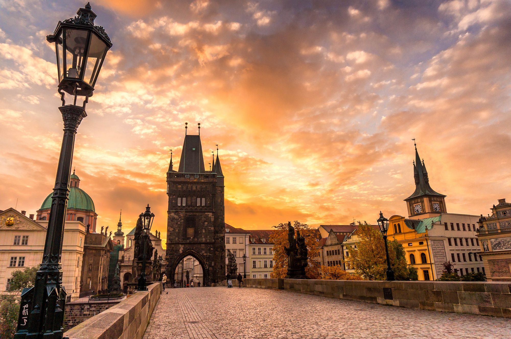
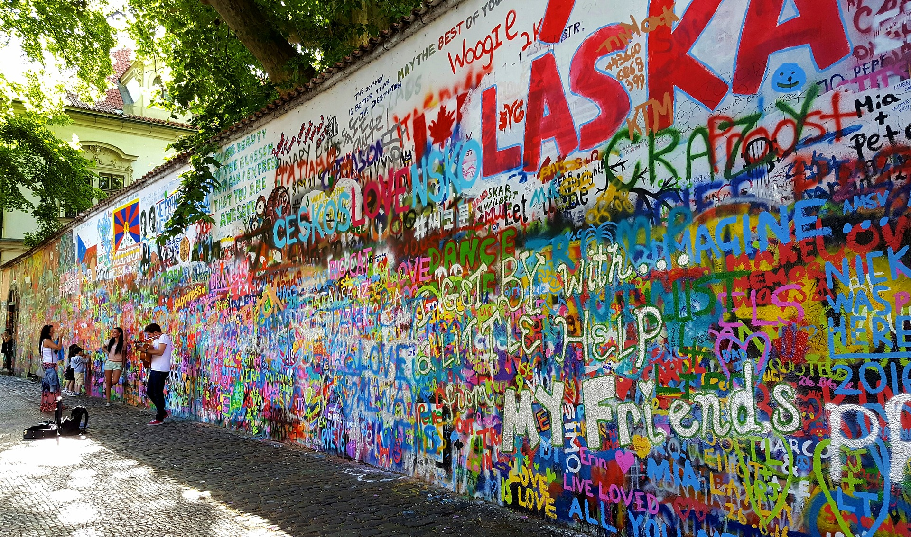
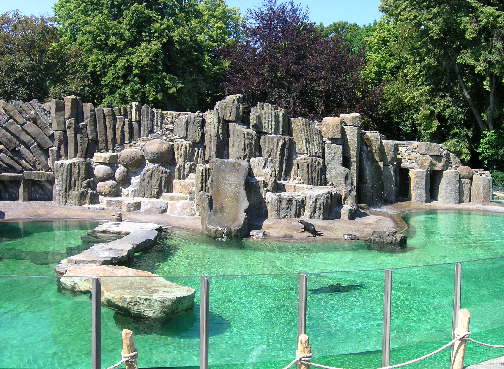
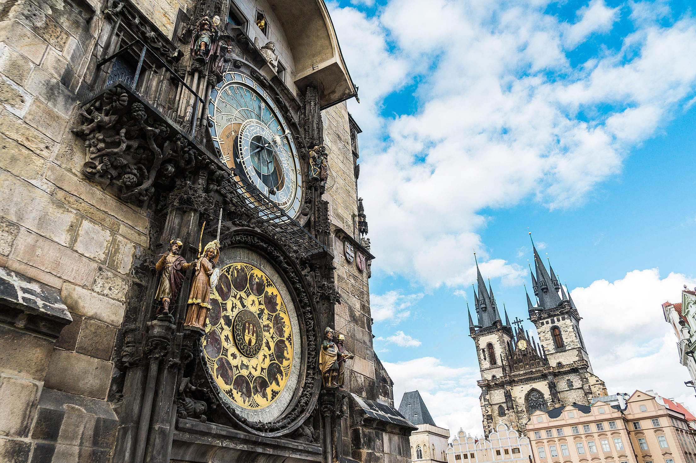
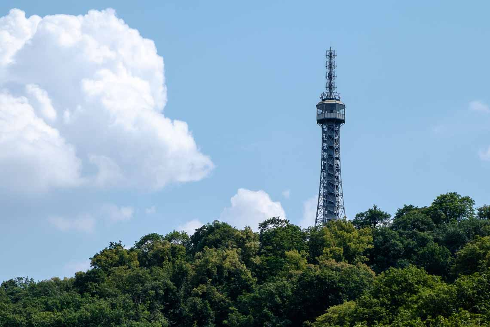

In Prague's Hradčany neighborhood, Prague Castle (Pražský hrad), once the home of Bohemia's kings, is today the official residence of the Czech Republic's President and one of the city's most visited tourist attractions. Originally built as a walled fortress around 970 AD, the castle has changed dramatically over the years and contains examples of most of the leading architectural styles of the last millennium. Within the castle walls are a number of Prague's most popular tourist sites, including St. Vitus Cathedral, St. George's Basilica, the Powder Tower, the Old Royal Palace, and the Golden Lane. The largest ancient castle in the world, this vast complex requires considerable time to tour, but it's time well spent (particularly rewarding are the excellent views over the Vltava River with the old town and its countless spires in the background). Highlights include the Old Royal Palace's main hall, the Vladislav Hall, so large it could be used for jousting tournaments, and staircases wide enough to allow mounted knights to use them. Be sure to also spend time in the Royal Garden, dating back to 1534 and home to a number of superb buildings including the Ball Game Pavilion, the Royal Summer House with its Singing Fountain, and the Lion's Court. (English language guided tours are available.)
At night the lights from Prague Castle glow in a range of hues. Basing yourself in the vicinity is a good idea so you can experience the city highlights by day and night. For some accommodation ideas in the area see our recommended luxury, mid-range, and budget hotels near Prague Castle.
Address: 119 08 Praha 1

2. Charles Bridge
One of the most recognizable old bridges in Europe, magnificent Charles Bridge (Karlův Most) boasts 32 unique points of interest along its 520-meter span. Built in 1357, the bridge has long been the subject of a great deal of superstition, including the builders having laid the initial bridge stone on the 9th of July at exactly 5:31am, a precise set of numbers (135797531) believed to give the structure additional strength (for added good measure, it was constructed in perfect alignment with the tomb of St. Vitus and the setting sun on the equinox). The bridge is famous for its many fine old statues. Among the most important are that of Holy Roman Emperor Charles IV and that of John of Nepomuk, the country's most revered saint, unveiled in 1683 (a more recent superstition involves rubbing the plaque at the base of the statue for the granting of a wish). Other highlights include spectacular views over the River Vltava and the structure's superb Gothic gates.

3. The Lennon Wall
Perhaps one of Eastern Europe's most unlikely attractions, Prague's Lennon Wall has stood since the 1980s as a tribute to former Beatle and peace campaigner John Lennon. Things got started almost immediately after the singer's murder in 1980 when this otherwise unassuming wall near the Charles Bridge became a place for fans to demonstrate their grief, painting pictures and slogans attributed to the star. Despite police efforts to erase the graffiti (Czechoslovakia, as it was then, was still under communist rule), the memorial wall kept reappearing and, along with Lennon's lyrics, the site became a symbol of hope and peace for the city's population. The tradition continues to this day, and along with gatherings on the anniversary of Lennon's death, tourists can frequently be observed adding their sentiments to the wall.
4. The Hilltop Fortress: Vyšehrad
Looking like something out of a fairytale, the Vyšehrad fortress stands high above the Vltava River overlooking Prague. Known to have been in existence as far back as the 10th century, it has long been the subject of myth and legend, including the foretelling of an ancient princess of the rising of a great city around it. Once the royal residence of Vratislav II, Vyšehrad also played a role as part of the original Royal Route taken by kings about to be crowned, who would have to stop here to pay tribute to their predecessors (the route led from Vyšehrad to Hradčany). Although now largely ruins, the fortress is a wonderful place for a stroll or picnic and offers superb views of the surrounding city.

5. Prague Zoo
Opened in 1931, the superb Prague Zoo is not only one of the top attractions in the city, it also ranks among the world's top 10 zoological parks (based on visitor reviews). In the Troja suburbs just a short distance north of the city center, this 143-acre attraction is an especially fun outing for those traveling with kids. Along with its more than 4,800 animals representing some 700 species - including many considered close to extinction - the zoo is notable for its role in saving the native (and endangered) Przewalski's horse. Highlights include a chance to ride a chairlift with great views of many of the animal enclosures, a huge giraffe exhibit, the superb salamander display, and the steamy indoor tropical jungle.

6. The Old Town Square and the Astronomical Clock
The historic center of Prague, the Old Town (Staré Město), is where you'll find the splendid Old Town Square (Staroměstské náměstí), one of the best places to begin exploring the city. Here you'll find the Tyn Church and the Clementinum, along with numerous other fine old churches, as well as splendid old architecture dating back as far as the 11th century, while the Jewish Quarter, Josefov, is just a short walk north. A highlight is the Old Town Hall (Staromestská radnice), home to the wonderful early 15th-century Astronomical Clock (orloj): each hour, it springs to life as the 12 Apostles and other figures appear and parade in procession across the clock face. Other Old Town Hall highlights are the Gothic doorway leading to its splendid interior with its art exhibits and displays, a chapel built in 1381, and an old prison. Be sure to make the ascent (by stairs or elevator) to the top of the Old Town Hall Tower for its fine views over Prague.

7. The Petryn Lookout Tower
Named after the hill on which it stands, the 63-meter-high Petrín Lookout Tower (Petřínská rozhledna) is a miniature replica of the Eiffel Tower in Paris that offers panoramic views over Prague (although only a fifth the size of its French counterpart, the tower's elevation creates the illusion that it's bigger than it actually is). Built in 1891 for a major exhibition from used railway tracks, it was later moved to Petrín Hill in the 1930s where it became one of the city's major tourist attractions. Today, visitors can either make the 30-minute climb up the Petrín hill to the base of the tower or take a leisurely trip aboard the funicular railway before tackling the structure's 299 steps to the top (there's also an elevator as well as a cafe).